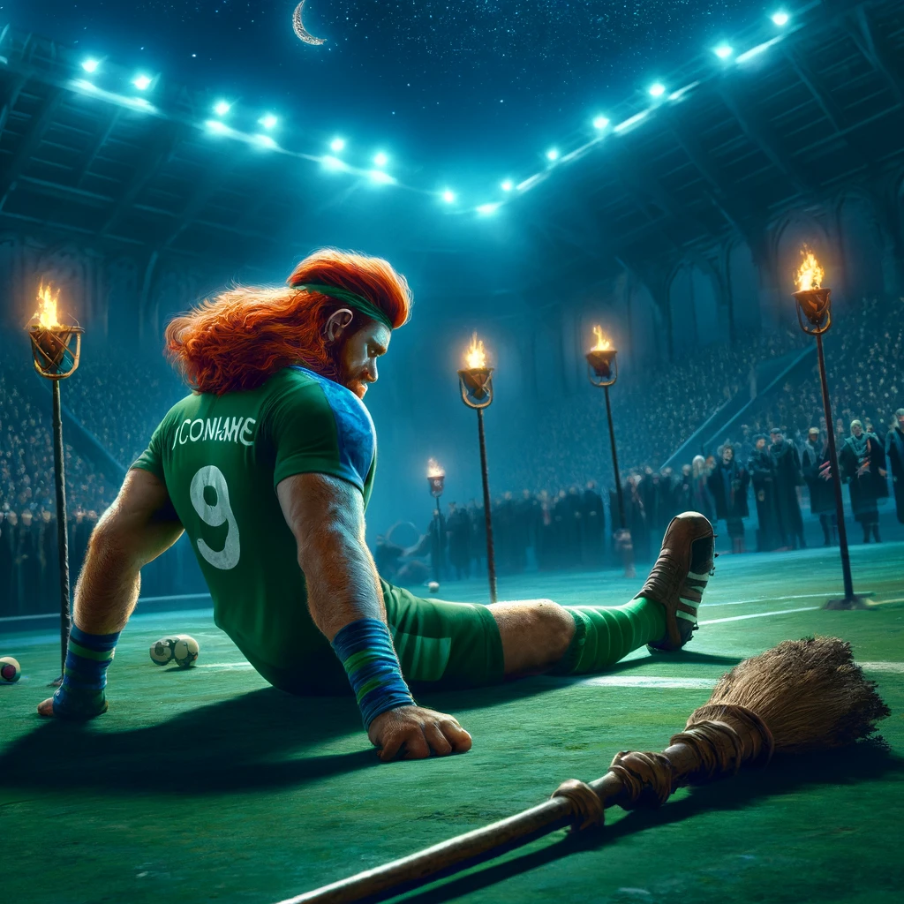

Russian Quidditch Team Disqualified from World Cup for Using Illegal "Liquid Luck"
April 19, 2024
The Quidditch World Cup has been rocked by a major scandal, as the Russian team has been disqualified for the illegal use of "Liquid Luck," also known as Felix Felicis, to enhance their performance. This revelation has stunned fans worldwide and triggered a comprehensive investigation into the practices of other teams competing in the tournament.
The International Quidditch Association (IQA) confirmed this morning that the Russian team had been using the banned potion to gain an unfair advantage in their matches, a clear violation of international Quidditch regulations. The potion, which is known to significantly enhance luck and performance, is strictly prohibited in competitive sports due to its potent effects.
"Fair play is the cornerstone of our sport," stated IQA President, Henrietta Bingleton. "The use of Felix Felicis not only undermines the integrity of the competition but also violates the trust of millions of Quidditch fans around the world."
Suspicions were raised after the Russian team's unnaturally flawless performance in early tournament games, where their precision and luck seemed extraordinarily heightened. An undercover investigation by IQA officials led to the discovery of the potion in the team's locker room.
Following the scandal, all of Russia's points have been voided, and their scheduled matches have been canceled. The team's disqualification has led to significant disruptions in the tournament schedule and has affected the standings of several other teams.
In response, the IQA has launched a full-scale investigation into all participating teams at the World Cup. This includes thorough searches of team facilities and personal belongings to ensure no other team is engaging in similar practices. "We are committed to maintaining a level playing field," added Bingleton. "This means rigorous enforcement of all our rules."
The Quidditch community has reacted strongly to the news, with many expressing their disappointment and anger. "This is not the Quidditch I grew up loving," said fan Marjorie Hawkins. "I’m glad the IQA is taking this seriously. We can't allow cheating to taint our beloved sport."
As the tournament continues, the focus remains on restoring trust in the sport and ensuring the fairness of competition. The ongoing investigations serve as a stern reminder of the importance of sportsmanship and integrity in Quidditch.
The disqualification of the Russian team is one of the most significant controversies in recent Quidditch history, casting a long shadow over this year’s World Cup. As the world watches, the future of some teams hangs in balance, awaiting the outcomes of the ongoing scrutiny

Brazil Stuns Bulgaria in Thrilling Upset at 2024 Quidditch World Cup
April 18, 2024
In a breathtaking showdown at the 2024 Quidditch World Cup, Brazil sent shockwaves through the wizarding world by clinching a stunning upset victory over tournament favorites Bulgaria. The match, held in the magical stadium of Luminous Luna in London, witnessed an electrifying display of skill, strategy, and sheer determination as Brazil secured their place in Quidditch history.
From the outset, Bulgaria, led by the legendary Viktor Krum, appeared poised for domination, with their formidable seeker Ivan Volkov relentlessly chasing the elusive Golden Snitch. Brazil, however, refused to be intimidated, unleashing a barrage of offensive maneuvers led by their star chaser, Isabela Santos.
The match reached fever pitch as both teams engaged in a relentless pursuit of the Quaffle, trading goals and defensive maneuvers with precision and agility. The crowd roared with anticipation as the scoreboard teetered on a knife-edge, each goal met with thunderous applause and gasps of astonishment.
But it was Brazil's unyielding resilience and tactical brilliance that ultimately tipped the scales in their favor. With the score tied and tensions running high, Brazil's seeker, Lucas Silva, executed a daring dive that left spectators holding their breath. In a heart-stopping moment, Silva emerged triumphant, clutching the Golden Snitch in his grasp and sealing Brazil's historic victory.
The stadium erupted in jubilation as fans from both nations alike marveled at the sheer spectacle of the match. For Brazil, it was a moment of unbridled triumph, a testament to their unwavering spirit and unshakeable resolve. For Bulgaria, it was a bitter defeat, a reminder that in the fast-paced world of Quidditch, anything can happen.
As the players exchanged handshakes and embraces, the spirit of sportsmanship shone brightly, reminding all present that while victory may be sweet, the true magic lies in the camaraderie and unity forged on the Quidditch pitch.
With this stunning upset, Brazil has firmly established itself as a force to be reckoned with in the world of Quidditch, sending a clear message to their rivals that they are ready to take on any challenge that comes their way. As the tournament progresses, one thing remains certain: the 2024 Quidditch World Cup is shaping up to be one of the most thrilling and unpredictable in recent memory.
Bludger Injury Shatters Dreams: Star Keeper Ruled Out of Quidditch World Cup
April 17, 2024
In a devastating blow to their championship aspirations, the wizarding world was left reeling today as news emerged of a tragic bludger injury that will sideline one of the Quidditch World Cup's most illustrious players for the remainder of the tournament. The heart-wrenching incident occurred during a fiercely contested match between Ireland and Australia, casting a pall over the tournament and sending shockwaves through the global Quidditch community.
The match, which had already been fraught with tension and drama, took a harrowing turn in the final moments of the second half when Ireland's star keeper, Liam O'Connor, found himself in the path of a rogue bludger. Despite his lightning-fast reflexes and years of experience, O'Connor was unable to evade the speeding projectile, which struck him with devastating force, sending him hurtling to the ground in agony.
Witnesses described the scene as chaotic, with players and spectators alike holding their breath as medical personnel rushed to O'Connor's aid. The severity of the injury soon became apparent, with officials confirming that O'Connor had sustained significant damage to his shoulder and arm, effectively ruling him out of the remainder of the tournament.
The news sent shockwaves through both teams, as well as the millions of fans watching around the world. O'Connor, a beloved figure in the Quidditch community, had been widely regarded as one of the tournament's standout players, his lightning-quick reflexes and unparalleled skill between the hoops earning him accolades and admiration from fans and rivals alike.
For Ireland, O'Connor's absence represents a devastating blow to their championship aspirations, leaving a void between the hoops that will be difficult to fill. As the team grapples with the loss of their star keeper, they must now rally together and find the strength to carry on in his absence, knowing that their hopes of lifting the coveted Quidditch World Cup trophy hang in the balance.
As the tournament progresses and the Quidditch community comes to terms with this tragic turn of events, one thing remains certain: Liam O'Connor's indomitable spirit and unwavering determination will continue to inspire players and fans alike, serving as a testament to the resilience of the human spirit in the face of adversity.
As the world of Quidditch mourns the loss of one of its brightest stars, thoughts and prayers are with Liam O'Connor as he embarks on the road to recovery, knowing that his legacy will endure long after the final whistle blows on the 2024 Quidditch World Cup.